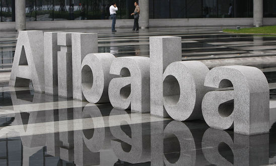

说白了，也就是百合网的用户根本不以结婚为目的，至于以什么为目的我就不加揣测了，至少是有很大一部分骗取消费者的托，就目前我接触下来已经发现超过5个了。[详细]
2014-03-17 分享 互联网| 金融| 央行
微信的不透明不公开如果继续不改进，用户也会用手指选择平台的。而易信也在默默谋划逆袭之路，推出公众平台吸引自媒体人。而据易信市场总经理袁佛玉透露目前易信公众平台周互动量已经搭一亿条。照此下去，微信真的[详细]
管理的本质是什么？就是树立起一个核心的业务，让这个业务带着所有的员工和组织构架往前走，而不是去构建一个四平八稳的组织构架，让所有的业务井井有条。[详细]
合作的核心是两部分，一部分是云计算的服务和大数据的处理，另一部分是天猫电商发售平台。[详细]
关于中兴九城要一起推盒子的事情已经大白于天下，但从参数来看，中兴九城到底是要推电视盒子还是游戏机?[详细]
今天（3月16日）晚上，腾讯云平台部总经理陈磊正搭乘航班从深圳向北京飞来。此行的目的，除了要见见北京的团队外，他更要接触一下这里的客户和服务商——这些客户和服务商将成为未来腾讯云平台生态系统中不可或[详细]
我们到底需要一个什么样子的盒子？[详细]
如果说打败淘宝的是微信，还不如说是手机为代表的移动端，那么打败微信的命题，要考虑的其实是如何打败手机，那么手机之后的趋势会是什么呢？还有什么东西比手机可能更占据我们的24小时里尽可能多的东西呢？我想[详细]

央行暂停二维码支付，最大的受益者是支付宝[详细]
设备+服务，动了很多人的奶酪，也动了微软自己奶酪，但为何微软要执意而为呢？[详细]
在今天阿里这个消息刚刚传到我的耳中时，赶巧，我正在看房，于是我一想，这阿里一上市，阿里的员工就可算是熬出头了，杭州的房价是不是绝逼要涨的节奏啊，现在是不是应该到杭州买套房，坐等阿里上市，然后高价转出[详细]
成功永远都只属于少数人，变革的浪潮，往往也只是从一朵朵浪花开始。在这个过程中，其实很难说对或错，成败也许都只能归为宿命。不过，我观察多年的体会是，如果真心求变，就不要预设很多假定前提，那样只会是自缚[详细]
由教育的特性可以看到，其产品互联网化的难题并非在于技术，而在于运营，因此可基于教育互联网化的需求，为之来搭建一个可以交互的平台。[详细]
任何成功的品牌，本质上都是为用户创造一种可供用户消费和追随的文化，形成具象的准信仰，这是一个互相成就的过程，而不是传统意义上的商品交易过程。[详细]
线下教育的生源正在流失到线上，如今还算慢的，等到有一天加速了，也许教室里就不剩几个人了，那时候就别谈什么模式的问题了，直接痛哭吧。盛大和360之前都是从收费高调转向免费，造就了两个比之前更大的企业，[详细]
很多智能电视现在打着安卓系统的旗号，狂称开源，啥都能装。结果在开机、切换等环节的响应速度跟不上，严重影响用户体验。[详细]
互联网金融逼迫银行回归其本质，即管理风险。从此，银行必须练内功，建立起健全有效的风险评估系统和风险定价机制[详细]
备受业界关注的阿里巴巴上市地点选择一事终于有了最终的答案，阿里巴巴集团日前宣布，已启动该公司的上市事宜。阿里巴巴集团的首次公开募股地点(IPO)地点确定为美国。[详细]
文/赵楠 （个人微信：zhaonan）[详细]
手游手机都要做到“伟哥”那样才能算好的产品，更持久，更愉悦。[详细]
中国互联网信息中心去年12月发布的《2013年中国网民信息安全状况研究报告》显示，整体上我国信息安全环境不容乐观，有74.1％的网民在此前半年内遇到过安全事件，总人数达4.38亿。[详细]
最近我在Linux上利用CERT BFF研究一个PoC。我之前有大量在Windows上写PoC的经验，所以认为将这种技能扩展到不同平台上是个不错的想法。可是，当我获得指令指针的控制权后，却发现几乎可以毫无障碍地使代码执行。[详细]
CTF全称就是（Capture The Flag）啦，中文就是夺旗子的小游戏。黑客在一些关卡中通过各种各样的技术找到最终的flag，从而获得加分。 一般CTF比赛中，会涉及MISC,PPC,CRYPTO,PWN,REVERSE,WEB,STEGA这几种题目。[详细]
极客Beenay25用一些简单的设备为游戏Cyberpunk LARP手工制作了一套可穿戴设备，从而得以享受更好的游戏体验。[详细]
BCTF“百度杯”全国网络安全技术对抗赛,是由百度公司主办,清华和北大的安全技术专家提供技术支持,紫金江宁、南京赛宁承办,面向全国范围网络安全技术实战竞赛。FreeBuf在赛后与初赛获得第一名的0ops战队取得了联系，并对他们做了专题采访。[详细]
公司简介：国内团购网站先驱。已经在北京、上海、广州、深圳等近100个城市开站。 工作地点：北京朝阳区望京 工作职责： 1，负责核心在线业务和内部关键业务的安全测试、审核与风险评估，并提供解决方案； 2，应急…[详细]
这次的漏洞其实和前一阵爆出的，Open URL Redirection漏洞相似，并不能直接对Facebook的用户造成危害。这次攻击的描述主要针对于盗取用户access token，可见移动端的安全也越来越被研究者和黑可关注。[详细]
近日FireEye上市大热，360公司也要推出APT防御产品。在APT的战火已经烧到天朝之际，且看看思科自家的安全防御团队CSIRT（response to cyber security incidents for Cisco-owned businesses）在2011年时对APT的认识与理解。[详细]
2014-03-14 分享 互联网| 金融| 央行
BCTF“百度杯”全国网络安全技术对抗赛,是由百度公司主办,清华和北大的安全技术专家提供技术支持,紫金江宁、南京赛宁承办,面向全国范围网络安全技术实战竞赛![详细]
担任本次Keen Team主攻手的研究员陈良，用时15秒攻破了MacOS X Mavericks 10.9.2，并用20秒攻破Windows 8.1。[详细]
爱德华·斯诺登(Edward Snowden)在西南偏西(SXSW)大会上接受采访后，又泄露出了一批有关于美国国家安全局（NSA）监听计划的最新文档。而在这些文档中的一页中可以看到，腾讯的聊天软件QQ和中国移动的移动即时通讯飞…[详细]
2014-03-13 分享 互联网| 金融| 央行
“汽车黑客”（car hacking） 的话题正越来越多地在媒体和安全公司之间讨论。曾几何时，黑客利用手中的工具黑掉一辆汽车的画面还只是出现在电影中，现如今已经在现实中成为可能，且成为了人们开始担忧的问题，这正是本文要讨论的话题。[详细]
大多数的web开发者都会遇到设计用户账号系统的需求。账号系统最重要的一个方面就是如何保护用户的密码。一些大公司的用户数据库泄露事件也时有发生，所以我们必须采取一些措施来保护用户的密码。[详细]
提到可穿戴设备你会想到什么？手环？手表？这些都弱爆了，Google 的 ATAP（ Advanced Technology and Products Group）联合Proteus推出的，在你的肠胃中检测各项身体数据的智能药片马上就要开始生产了。[详细]
本文档介绍了Nmap的系统结构及扫描流程，最后重点介绍了Nmap的NSE扫描脚本。 Nmap简介 Nmap也就是Network Mapper，是一款网络连接端扫描软件，用来扫描网上电脑开放的网络连接端。确定哪些服务运行在哪些连接端，…[详细]
2014-03-12 分享 互联网| 金融| 央行